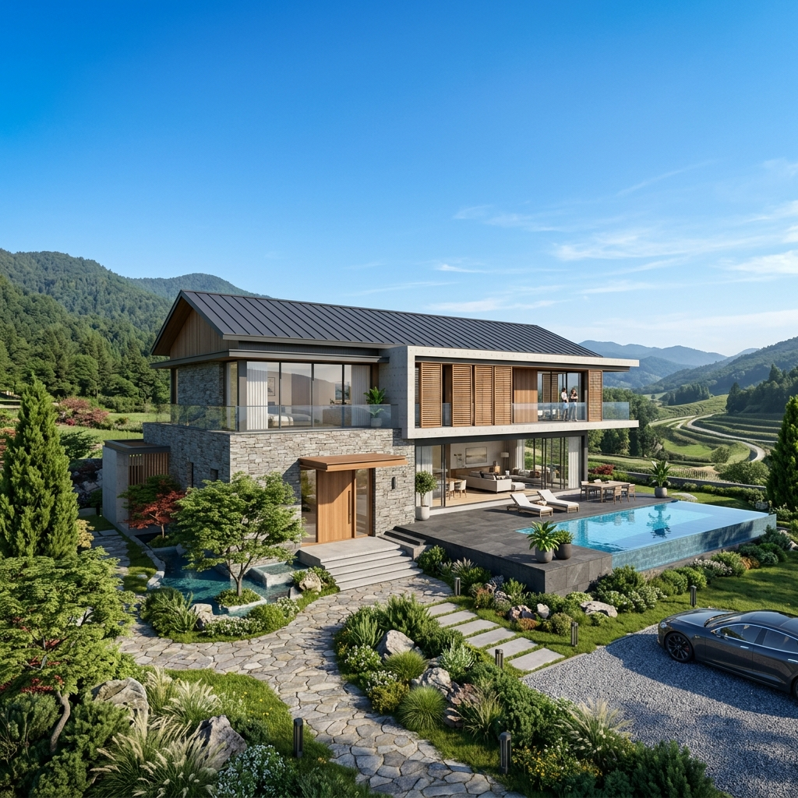

已有圖說或建照，找施工團隊
先提供已備資料，說明哪些規劃已確定、希望委託哪些工程。若圖說與建照都已備妥，可優先從施工範圍與估價資料開始討論；資料只有一部分，也請照實說明。
豈樂工程行｜台南・北高雄建屋洽詢
已有土地、設計圖或建照，或準備拆屋重建，都可以先說明現況。豈樂可協助建屋各階段；已有圖說與建照、正在找施工團隊的屋主，可直接從施工範圍談起。
服務台南與北高雄。請提供行政區與基地位置，確認個案服務範圍。
已有圖說與建照？查看施工洽詢內容。
豈樂工程行｜台南・北高雄
正在找住宅施工團隊，先把已完成的規劃說清楚。提供基地位置、目前圖說與建照的準備狀態，以及希望施作的工程範圍，方便一起討論做法、費用與時間。
透天、別墅、RC住宅與鋼構住宅皆可洽詢。設計、申請、施工及監造的實際負責人與合作單位，依個案確認。
洽詢時可以先備這些資料：
有資料就先提供，缺少的部分在聯繫時說清楚。實際承作範圍、費用與工期，需要依圖說及現場條件討論。
先提供已備資料，說明哪些規劃已確定、希望委託哪些工程。若圖說與建照都已備妥，可優先從施工範圍與估價資料開始討論；資料只有一部分，也請照實說明。
先告訴我們基地位置、目前現況與想蓋的住宅用途。土地評估、設計及建照申請等階段都可洽詢協助，後續需要的資料與負責單位依個案確認。
提供舊屋位置、現況照片、重建想法與已備圖說，先討論拆除及新建需求。需要哪些評估、工程與合作分工，依現況確認。
透天與別墅的建屋需求、RC（鋼筋混凝土）與鋼構住宅都可洽詢。先說明預計用途、樓層與約略面積；如果已有圖說或指定的結構形式，一併提供。
尚未確定做法，可以先說明使用需求。個案採用的設計與施工方式，仍要依圖說、基地條件及相關專業人員的評估確認。
從土地評估、建築設計、建照申請，到施工、監造與室內裝修，都可以先洽詢需要的協助。每個案子需要的工作不同，請在委託前確認由誰負責、包含哪些內容，以及費用如何計算。
| 需要協助的階段 | 洽詢時先確認 |
|---|---|
| 土地評估、建築設計 | 手上有哪些土地與需求資料，還需哪些評估，由哪些人員或單位處理 |
| 建照申請、監造 | 目前進度、負責的專業人員與單位、工作內容及費用 |
| 住宅施工 | 圖說、施工範圍、基地現況、工程承作與分包安排 |
| 室內裝修 | 是否併入本次委託，包含哪些空間與工項 |
合作對象依個案確認，沒有固定名單。各階段可提供協助，不表示全部專業工作都由豈樂自行執行。
規劃、評估或現勘是否收費，以及各階段如何計價，請在安排前確認。
可以。先提供基地位置、現況與建屋想法，說明目前有哪些資料。土地評估、設計及申請等需要的協助與分工，依個案確認。
請提供基地位置、圖說與建照的準備狀態，並說明想委託的工程、希望時間及預算想法。已有圖說與建照的案件，可優先從施工範圍與估價資料談起。
可以。請提供舊屋位置、現況與重建想法；若已有評估資料或圖說，也可一併說明。拆除、新建及其他工作如何安排，依個案討論。
這些階段都可協助，但不代表全部自行執行。合作人員與單位依個案確認，委託前請先確認各方工作內容、相關資格及費用。
RC與鋼構住宅都可洽詢，透天與別墅的需求也可提出。實際結構與施工方式仍需依個案圖說及評估確認。
服務台南與北高雄。請先提供行政區與基地位置，確認個案能否安排。
費用需要看基地條件、圖說、材料與施工範圍，不能只用一個坪數確認。最低坪數、工程預算及評估或現勘費用，請在聯繫時詢問。
先說明希望時間，再依準備進度、圖說與工程範圍討論。實際工期與安排以個案確認為準。
有圖說與建照，可先說明想委託的施工範圍；還在整理想法，也可以先從基地位置與住宅需求開始。
LINE官方帳號：@548mfdmm
我想詢問建屋工程。 基地位置：行政區／地點。 目前階段：已有土地／已有圖說／已有建照／準備拆屋重建。 住宅需求：透天／別墅／其他需求；RC／鋼構／尚未確定。 預計樓層與約略面積： 想委託的工程範圍： 希望時間與預算想法：尚未確定可註明。 已有資料：圖說、建照準備狀態、現況照片或評估資料。 請協助確認服務範圍、最低規模、需要補充的資料，以及後續評估與費用。